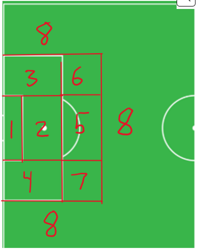
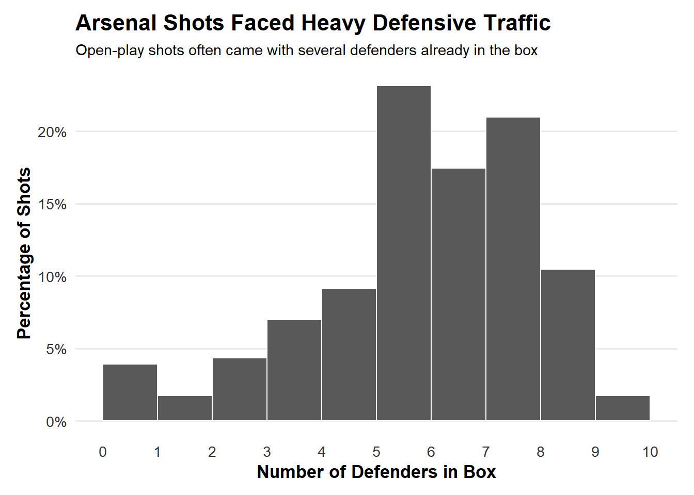
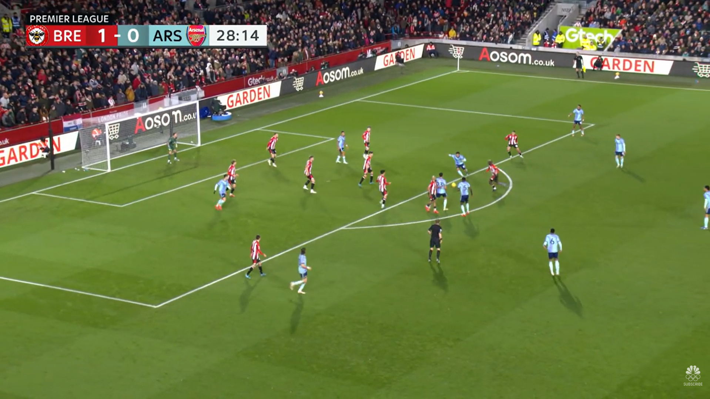
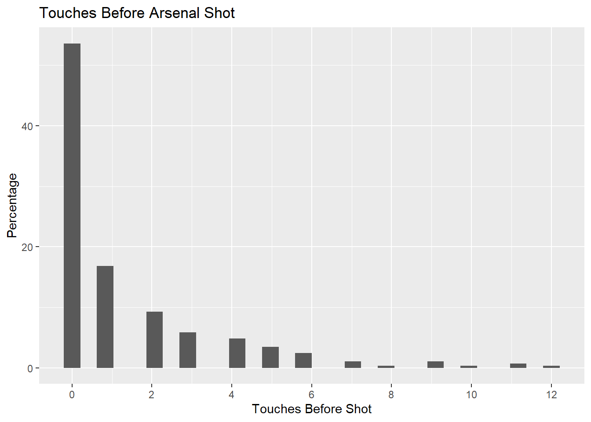
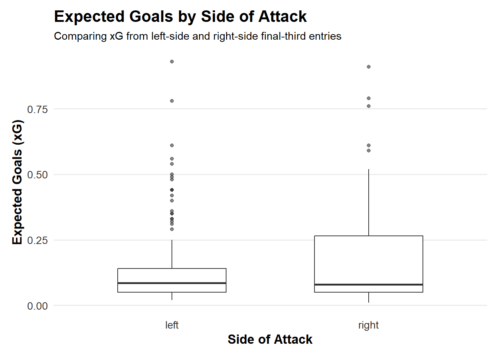
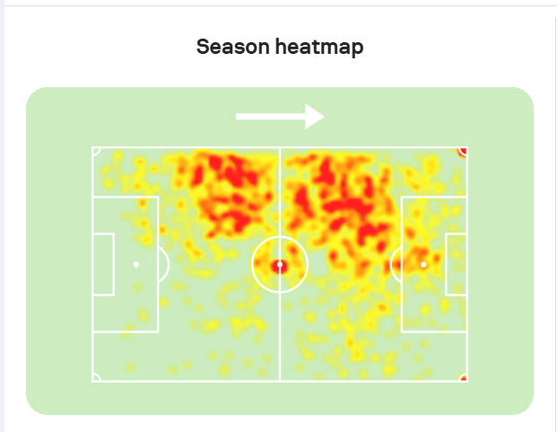
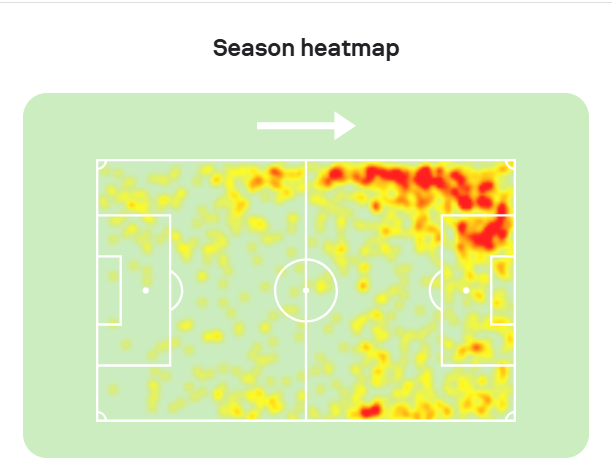
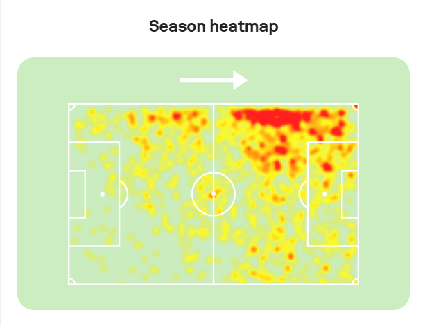

library(tidyverse)
source("arsenal_analysis_functions.R")
arsenal_24_25 <- load_and_clean_arsenal_data("arsenal_24_25.csv")Arsenal 24/25 Written Report QMD
Introduction
Going into the 2024/25 season, Arsenal were meant to be the favorites to win the Premier League, after finishing 2nd in back to back seasons. But ultimately, despite a deep run in the Champions League, their inconsistency in the Premier League was a shock to many. Specifically, despite their defense still being solid, their attacking numbers declined way more from the 2023/24 season prior.
In this report, with a dataframe of almost all the shots Arsenal took in the 24/25 Premier League season, I will highlight their strengths and weaknesses from the season, and what the team can change before the season starts.
Arsenal’s Shooting Profile
======= >>>>>>> a84d5fd1c3cd5a136171559d15fda32210ad689fIntroduction
Going into the 2024/25 season, Arsenal were meant to be the favorites to win
the Premier League, after finishing 2nd in back to back seasons. But
ultimately, despite a deep run in the Champions League, their inconsistency
in the Premier League was a shock to many. Specifically, despite their
defense still being solid, their attacking numbers declined way more from
the 2023/24 season prior.
In this report, with a dataframe of almost all the shots Arsenal took in the
24/25 Premier League season. I will highlight their strengths and weaknesses
from the season, and what the team can change before the season starts.# General Information
get_general_summary(arsenal_24_25)# A tibble: 1 × 3
total_shots goals avg_xg
<int> <int> <dbl>
1 291 63 0.18count_shot_results(arsenal_24_25)# A tibble: 6 × 2
result n
<chr> <int>
1 off target 95
2 saved 75
3 goal 63
4 blocked 47
5 deflected off target 10
6 own goal 1count_frequent_shooters(arsenal_24_25)# A tibble: 6 × 2
player n
<chr> <int>
1 Leandro Trossard 39
2 Bukayo Saka 33
3 Declan Rice 30
4 Gabriel Martinelli 28
5 Kai Havertz 27
6 Mikel Merino 25count_common_assist_types(arsenal_24_25)# A tibble: 6 × 2
assist_type n
<chr> <int>
1 normal pass 108
2 floated cross 33
3 n/a 33
4 corner 29
5 through ball 21
6 driven cross 19count_common_shot_zones(arsenal_24_25)# A tibble: 6 × 2
zone n
<dbl> <int>
1 2 117
2 1 54
3 3 37
4 4 34
5 5 28
6 7 8
From the diagram and information above, we can tell that a majority of Arsenal’s shots are central and inside the box. Out of 291 shots from open play, Arsenal scored 63, which is an 18% conversion rate.
How Opponents Defended Arsenal
The narrative around Arsenal being favorites may have caused other teams’ defensive styles of play against them to change.
======= >>>>>>> a84d5fd1c3cd5a136171559d15fda32210ad689fFrom the diagram and information above, we can tell that a majority of
Arsenal's shots are central and inside the box. Out of 291 shots from open
play, Arsenal have scored 63 which is an solid 18% conversion rate. The narrative around Arsenal being favorites may have caused other teams'
defensive styles of play against us to change. summarize_defensive_line(arsenal_24_25)# A tibble: 3 × 3
defensive_line total percentage
<chr> <int> <dbl>
1 high 37 12.7
2 low 165 56.7
3 mid 89 30.6plot_defensive_box_traffic(arsenal_24_25)`stat_bin()` using `bins = 30`. Pick better value with `binwidth`.
Now that Arsenal are favorites, Premier League teams “respect” them more, meaning they give Arsenal more space to play out the back and advance towards the opposing teams’ box. This usually means they sit deeper and give Arsenal more space in their own defensive third, allowing them to build out from the back with relative ease.
However, as soon as Arsenal approaches the final third, all that space disappears. Opponents put more defenders between the ball and the goal, making it harder for Arsenal to pass and create more threatening shots.
As seen from the histogram, teams mostly have at least 5 players excluding the goalkeeper defending the goal in their own box whenever Arsenal take a shot.
=======Now that Arsenal are favorites, Premier League teams "respect" them more,
meaning they give Arsenal more space to play out the back and advance
towards the opposing teams' box. This usually means they sit deeper and give
Arsenal more space in their own defensive third, allowing them to build out
from the back with relative ease. Arsenal’s technical quality and passing
precision make them very effective at progressing the ball through these
early phases.
However, as soon as Arsenal approaches the final third, all that space
disappears. Opponents put more defenders between the ball and the goal,
making it harder for Arsenal to pass and create more threatening shots.
In contrast, in previous seasons when Arsenal weren't seen as serious title
contenders, teams were more willing to press higher and give up more space
behind them. This gave Arsenal more room in attacking areas closer to the
opponent goal, enabling quicker transitions and more free-flowing soccer in
the final third.
As seen from the histogram, teams mostly have at least 5 players excluding
the goalkeeper defending the goal in their own box, whenever Arsenal take a
shot.
As one can see in the photo above from Arsenal vs Brentford in January, Brentford had all their players behind the ball. This made it very difficult for Arsenal to create a shot that was very likely to score.
As a result, teams often get pressure on the player shooting.
As one can see in the photo above from Arsenal vs Brentford in January. With
Brentford having all their players behind the ball, it's very difficult for
Arsenal to have a shot that's very likely of scoring. This was a common
theme in Arsenal games, and one that proved very difficult for Arsenal. As a result teams always get pressure on the player shooting which puts them
off.test_pressure_xg_difference(arsenal_24_25)
Welch Two Sample t-test
data: xg by shot_under_pressure
t = 3.624, df = 168.66, p-value = 0.0003838
alternative hypothesis: true difference in means between group no and group yes is not equal to 0
95 percent confidence interval:
0.04350852 0.14762971
sample estimates:
mean in group no mean in group yes
0.2401887 0.1446196 Shots taken under defensive pressure had an average xG of 0.14, while shots without pressure had an average xG of 0.24. This difference is large enough that it is very unlikely to be due to chance, showing that pressure greatly reduces the quality of Arsenal’s chances.
Arsenal’s Chance Creation
To find what areas Arsenal attack in better than others in possession, I divided the area into 5 spaces: the left halfspace, right halfspace, middle, left, and right. I also looked at shots from set pieces, which are restarts that the referee awards, such as corner kicks and free kicks.
Shots taken under defensive pressure had an average xG of 0.14, while shots
without pressure had an average xG of 0.24. This difference is large enough
that it’s very unlikely to be due to chance, showing that pressure greatly
reduces the quality of Arsenal’s chances.To find what areas Arsenal attack in better than others in possession, I
divided the area into 5 spaces: the left halfspace, right halfspace, middle,
left, and right. Halfspaces are channels located between the central lanes
and the wide areas of the pitch. I also looked at shots from set pieces,
which are restarts that the referee awards, such as corner kicks and free
kicks.summarize_attack_entries(arsenal_24_25)# A tibble: 6 × 3
entry_type count prop
<chr> <int> <dbl>
1 left 49 0.181
2 left halfspace 37 0.137
3 middle 27 0.0996
4 right 50 0.185
5 right halfspace 48 0.177
6 set piece 60 0.221 From the table, we see that Arsenal are mostly reliant on attacking from the wings and right halfspace, with less emphasis on the left halfspace and middle. This makes sense because players such as Saka, Odegaard, Martinelli, and Trossard often take up these spaces.
This season, Arsenal were also known to heavily rely on set pieces in tight games.
From the table, we see that Arsenal are mostly reliant on attacking from the
wings and right halfspace, with less emphasis on the left halfspace and
middle. This makes sense, our most natural attacking players such as Saka,
Odegaard, Martinelli, and Trossard take these spaces up so they get the most
touches and influence in attack. Yet we still struggle to find that final
shot that leads to a goal.
This season, Arsenal were known to heavily rely on set pieces in tight
games.calculate_set_piece_goal_percentage(arsenal_24_25)[1] 22.22222In fact, 22.2% of Arsenal’s goals were from set pieces. As a team that is supposed to dominate games, this is concerning because it highlights how uninspired Arsenal’s creation was from open play relative to prior seasons.
Individual Shot Creation and Dribbling
From a fan’s perspective, a lot of Arsenal’s lack of creation stems from the fact that they do not have enough world-class playmakers. Many players depend on the system rather than creating big chances by themselves. To gain insight into this, I checked how often players dribble before shots.
In fact 22.2% of Arsenal's goals were from set pieces. As a team that is
supposed to dominate games, this is very concerning because it highlights
how uninspired our creation was from open play relative to prior seasons.
The numbers and eye test prove this.From a fan's perspective, I think a lot of our lack of creation stems from
the fact that we don't have world class playmakers on this team. A lot of
our players depend on the system, rather than making big plays by
themselves. To gain insight into this, I checked how often our players
dribble and where.plot_touches_before_shot(arsenal_24_25)`stat_bin()` using `bins = 30`. Pick better value with `binwidth`.
For starters, the majority of Arsenal’s shots were first-time shots, meaning players either did not touch the ball before shooting or only took one touch to control it. This suggests that Arsenal players rarely created shots for themselves. They had to rely on movement and passing to score.
For starters, majority of our shots were first time shots, meaning they
didn't have to touch the ball before shooting, or they only took one touch
to control it. What this shows is that our players very rarely created shots
for themselves. They had to rely on their movement and passing to score.
Obviously this is difficult to maintain at a high level, but still when
teams suffocate the passing lanes, dribbling and beating your defender with
skills is needed, but our team can't and doesn't do that. summarize_shots_after_beating_defender(arsenal_24_25)# A tibble: 1 × 3
total_shots shots_after_beating_defender proportion
<int> <int> <dbl>
1 291 67 0.230summarize_goals_after_beating_defender(arsenal_24_25)# A tibble: 1 × 3
total_goals goals_after_beating_defender proportion
<int> <int> <dbl>
1 63 15 0.238About 22% of Arsenal’s goals and shots came after an Arsenal player beat a defender on the dribble. For Arsenal to succeed offensively and score more goals, this number should go up next season.
22% of our goals and shots came after an Arsenal player beats a defender on
the dribble. For us to succeed offensively and score more goals, I'd want to
see this number go up next season. Hopefully, in the transfer window Arsenal
can buy a player with this ability.rank_defender_beating_players(arsenal_24_25)# A tibble: 12 × 3
beaten_by times_beaten_defender proportion
<chr> <int> <dbl>
1 Bukayo Saka 20 0.299
2 Gabriel Martinelli 10 0.149
3 Leandro Trossard 8 0.119
4 Ethan Nwaneri 6 0.0896
5 Martin Odegaard 6 0.0896
6 Declan Rice 5 0.0746
7 Jurrien Timber 5 0.0746
8 Gabriel Jesus 2 0.0299
9 Raheem Sterling 2 0.0299
10 Ben White 1 0.0149
11 Myles Lewis-Skelly 1 0.0149
12 Riccardo Calafiori 1 0.0149From the table, we see that Bukayo Saka beat the most players one-on-one despite missing half the season through injury. Despite that injury, he still had more defender-beating actions than Gabriel Martinelli and Leandro Trossard. This supports the idea that Arsenal’s attack depends heavily on Saka.
From the table, we see that our star player and starting Right Winger Bukayo
Saka beat the most players one on one, despite missing half the season
through injury. Despite the injury he still has more than the 2 other Left
Wingers, Gabriel Martinelli and Leandro Trossard. This is very concerning as
a fan. Throughout the seasons Saka has been known as the player that has
been the main man for Arsenal's attack. This table supports that.
Because of this, Saka has been known to get the "star player" treatment,
meaning that he'll be double teamed on defense. Despite being a great
player, he doesn't have the skill to constantly bypass this. However, if our
Left Wingers(Martinelli and Trossard) were just as effective, not only would
we get more shots on target, but also this would free up space for Saka.
This has become a prominent complaint, where fans feel as if our left hand
side just isn't as good as our right.plot_xg_by_wing_entry(arsenal_24_25)
I observed that the right side tends to produce higher upper-end xG chances, though this difference was not statistically significant. This may suggest potential but inconsistent quality from the right.
I observed that the right side tends to produce higher upper-end xG chances,
though this difference wasn’t statistically significant. This may suggest
potential but inconsistent quality from the right. test_beating_defender_xg_by_zone(arsenal_24_25)# A tibble: 7 × 6
zone p_value mean_beaten mean_not_beaten n_beaten n_not_beaten
<dbl> <dbl> <dbl> <dbl> <int> <int>
1 1 0.0555 0.638 0.390 4 23
2 2 0.811 0.204 0.199 25 68
3 3 0.277 0.0782 0.129 11 23
4 4 0.399 0.0692 0.0711 12 19
5 5 0.263 0.05 0.0395 6 19
6 6 1 0.035 0.03 4 1
7 8 1 0.02 0.02 2 4To evaluate whether Arsenal creates more dangerous chances when attackers beat defenders on the dribble, I compared xG in situations where a defender was beaten versus when they were not. In zone 1, the p-value is almost significant. In the small sample size, when Arsenal players beat their defender and pass into the box, it is often very dangerous.
=======To evaluate whether Arsenal creates more dangerous chances when attackers
beat defenders on the dribble, I compared xg in situations where a defender
was beaten versus when they were not. In zone 1, you can see that the p
value is almost significant. In the small sample size that we have, when our
players beat their defender and pass into the box, it's almost always a free
goal. With better wingers we can see more of this. An example is in the
Arsenal vs Ipswich game in Gameweek 18. Transition Attacking
With Arsenal struggling to score against low blocks, the ability to capitalize on transition goals is important.
In the few instances that aren't shown in this dataset due to the crosses
not being completed, that's because our strikers didn't make contact with
the ball, but with the addition of Viktor Gyokeres, a more pure striker and
goalscorer, he'll be scoring these more often and that's how we can get to
use him more.
For the rest of the shooting zones, there are other factors to account for
such as angle and how many defenders are between the ball and the goal, so
the xg is more random.With this issue of struggling to score against low blocks, the ability to
capitalize on transition goals where defenses are caught out is vital. summarize_transition_shots(arsenal_24_25)# A tibble: 1 × 5
total average_xg average_time_to_shoot num_goals goals_prop
<int> <dbl> <dbl> <int> <dbl>
1 36 0.180 6.09 11 0.306Some fans believe Arsenal were too slow in transition compared to seasons prior. The average xG from transitions is higher than the total average, but the time to shoot is pretty long, which makes it easier for defenders to get back and protect their goal. Overall, Arsenal’s transition play lacked creativity, decision making, and efficiency.
=======Some fans believe that Arsenal were too slow in transition compared to
seasons prior. I took a look at all shots from transition. The average xg
from transitions is higher than the total average, but the time to shoot is
pretty long, which makes it easier for defenders to get back and protect
their goal. Overall, our transition lacked creativity, decision making, and
efficiency.Arsenal transition example — Martinelli GW decision making
As seen in the clip, Martinelli makes a poor decision to shoot while the defender is recovering to block the goal. He also does not have strong passing options for a better shot. This was a common theme throughout the season.
Transfer Recommendation: Eberechi Eze
After this season, many fans believed the main target should be a left winger. After playing around with the data, I believe the data supports this. Not everything was statistically significant, but football is a game of small margins.
The player Arsenal have been linked with is Eberechi Eze. Eze is a talented playmaker, dribbler, and finisher. The main concern is that he is primarily a central attacking midfielder and not a traditional touchline winger.
As you can see there are many issues in this shot. Martinelli makes a really
bad decision to shoot with the defender recovering to block the goal, but
also Martinelli has no options that he can pass to for a better shot. It all
looks very bland and unexciting. This was a common theme me and many other
fans noticed from watching. We scored 30% of our transition goals, but it
could've been better. After this season, many fans believed the main target should be a Left Wing,
and after playing around with the data, I believe the data supports this.
The statistics major in me is troubled because not everything was
statistically significant, however, the football fan, watcher, and even
player part of me knows the saying that "Football is a game of small
margins".
The player that the media is saying that Arsenal is monitoring is Eberechi
Eze. Eze is a talented playmaker, dribbler, and finisher. The main concern
is that he's primarily a Center Attacking Mid and not a touchline Winger. summarize_player_shots_by_zone(arsenal_24_25, "Leandro Trossard")# A tibble: 7 × 3
zone shots proportion
<dbl> <int> <dbl>
1 2 15 0.385
2 4 11 0.282
3 1 6 0.154
4 3 3 0.0769
5 7 2 0.0513
6 5 1 0.0256
7 8 1 0.0256summarize_player_shots_by_zone(arsenal_24_25, "Gabriel Martinelli")# A tibble: 5 × 3
zone shots proportion
<dbl> <int> <dbl>
1 2 12 0.429
2 4 7 0.25
3 1 6 0.214
4 3 2 0.0714
5 6 1 0.0357


From the heatmaps, we can see that all three players have a lot of touches on the touchline. Although Eze operated more frequently in the middle of the field, he has enough experience in wide areas to be useful for Arsenal on the left.
=======From the heatmaps we can see that all three players have a lot of touches on
the touchline, so although Eze operated more frequently in the middle of the
field last season, he has enough experience that could be useful for Arsenal
on the left. That season, Eze also had a 52% dribble success rate which is
higher than Martinelli(35%) and Trossard(51%), while also scoring more goals
(11) than Martinelli and Trossard. 
Knowing Eze as a player and seeing both his heatmap and shotmap, I would say that he “generates football.” What that means is that no matter where he plays, he usually finds a way to make an impact. He can shoot, dribble, and pass in the middle and left part of the field.
Eze driving inside and creating space
Outside of the numbers and maps, these clips show Eze’s ability to play on the left. In the first clip, he plays a strong cross from the touchline. In the second clip, he receives the ball on the left, drives inside, attracts defenders, and opens space for a teammate.
This type of player would help lighten the load on Saka and make Arsenal’s attack less predictable.
Conclusion
Arsenal remained strong defensively during the 2024/25 season, but their attack became too predictable. Opponents defended deeper, Arsenal relied heavily on set pieces, and Bukayo Saka carried too much of the team’s individual creation. While some results were limited by sample size, the overall patterns suggest Arsenal would benefit from adding another creative dribbler on the left side. Based on the data and tactical evidence, Eberechi Eze appears to be a strong fit for that need.
Knowing Eze as a player and seeing both his heatmap and shotmap, I would
come to the conclusion that he simply "generates football". What that means
in the football community is that no matter what position on the field he's
playing, I would expect him to make an impact. The reason I say this is that
he can shoot, dribble, and pass in the middle and left part of the field.
After being such a robotic and bland team in offense, this is exactly what I
think Arsenal need to take a big step towards winning a trophy. Eze driving inside and creating space
Outside of the numbers and maps, I provided two clips that showcase Eze's
ability to play on the left. In the first link, after being trapped on the
touchline, he effortlessly plays a pinpoint cross that his teammate is
easily able to tap into the goal. So, he definitely has the technical
ability to cross on his left foot that Martinelli and Trossard struggled
with.
In the second clip, he receives the ball all the way on the left in
midfield, and drives into the middle and makes the defenders all attract
towards him in anticipation of him shooting, but he plays a pass to the
right for his teammate to be wide open to shoot.
This is an example of Eze having so much gravity as a dribbler and
playmaker, meaning that if he can't open up space for himself, then he'll
definitely open up space for another teammate. This relates back to what I
was saying about lightening the load off the right off our star player Saka.
For me and other fans, this signing is a no brainer.